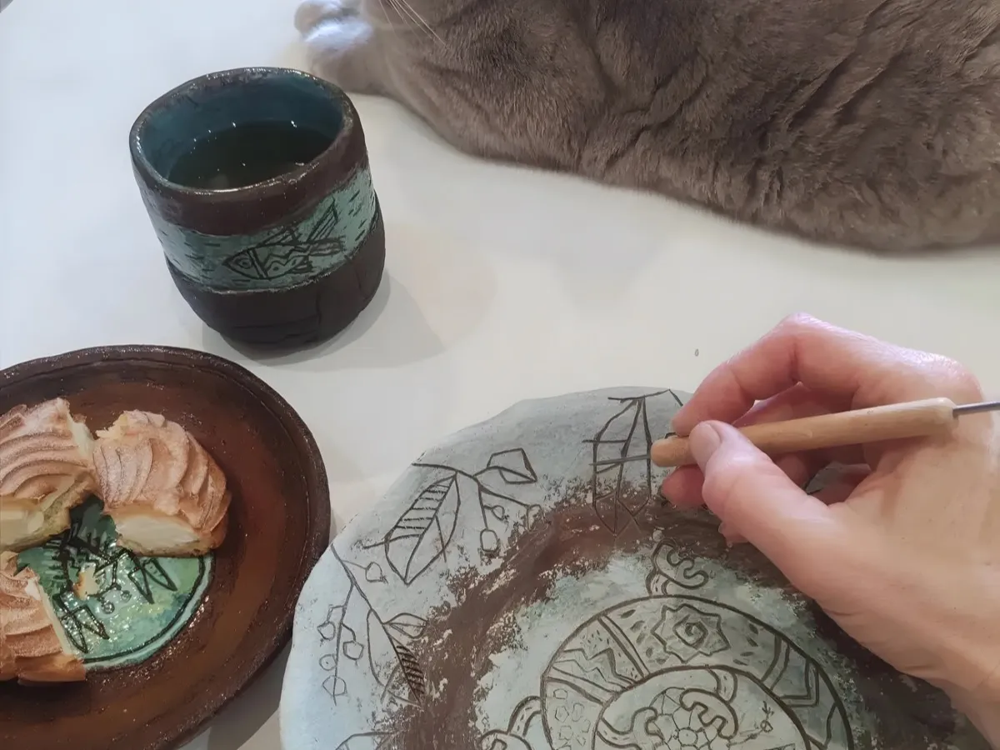

Почему трипод
Чай пьём из чайных чашек. А какао?
Майя и ацтеки пили какао из чаш на трёх ножках. Бобы мололи, разводили холодной водой и взбивали до пены — и это был напиток богов, а заодно валюта.
Полихромные триподы были роскошью, доступной немногим. Я делаю их вручную и расписываю по сырой глине — процарапываю линию за линией.
«Разве можно пить какао из какой-то другой посуды? Я не могу».